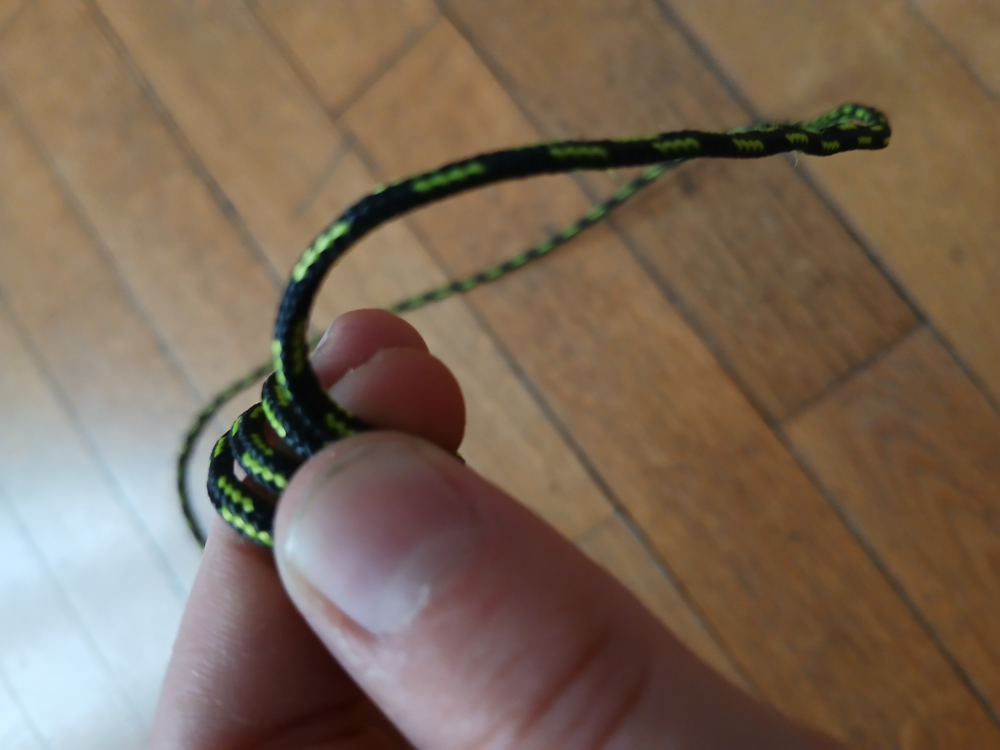
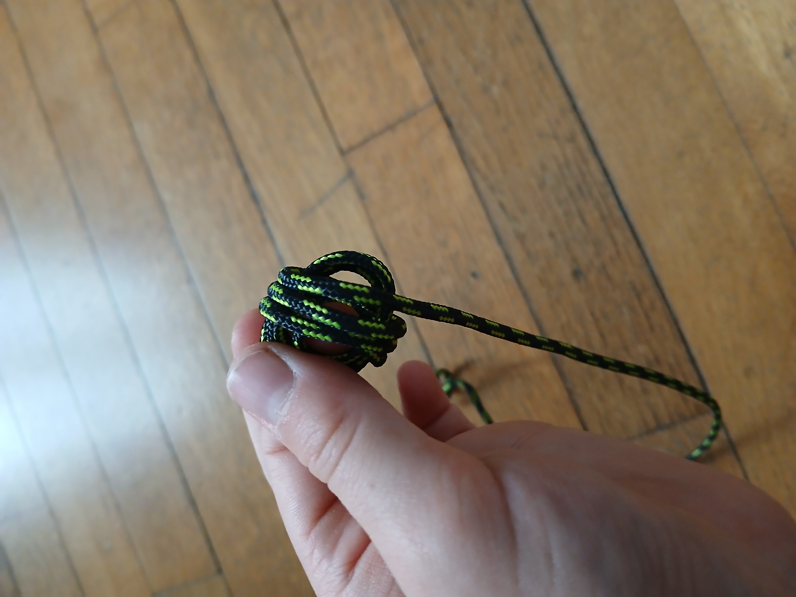
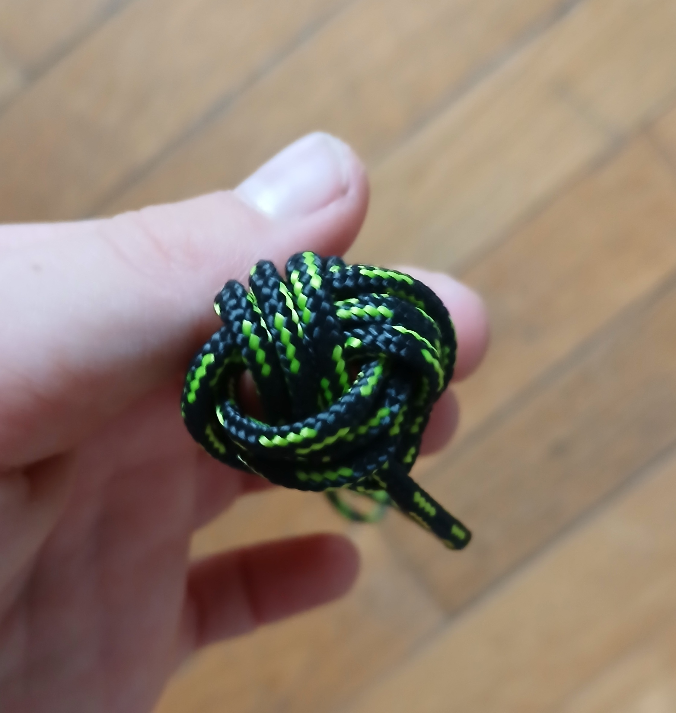
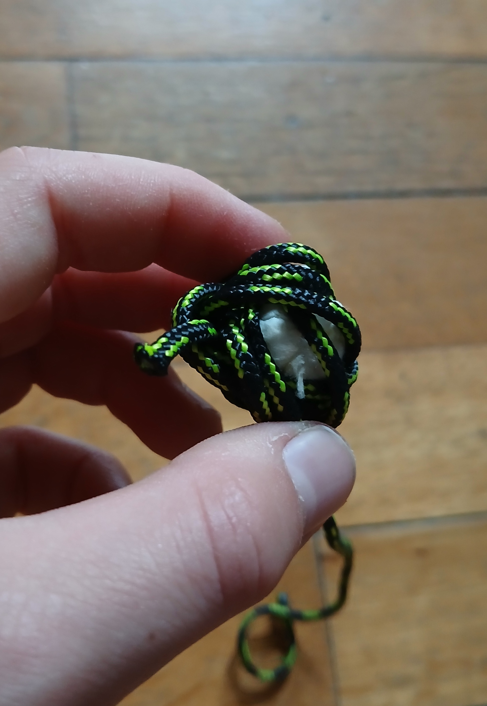
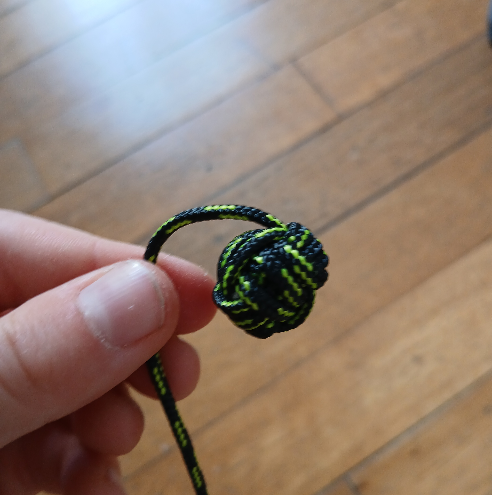
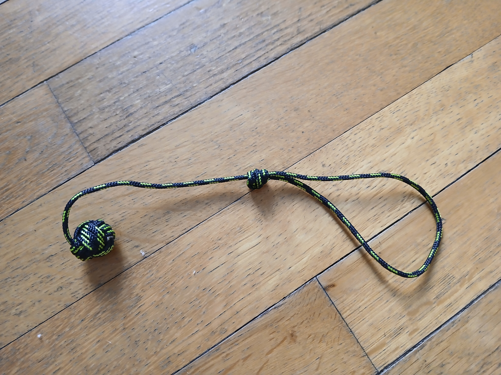

1) Tendre son index et son majeur. Prendre le bout et faire 3 tours autour de ses 2 doigts :

2) Faire la même chose verticalement :

3) Faire passer le bout 3 fois dans les 2 trous formés par les étapes précédentes :

4) Mettre un petit objet en forme de bille (ici, un mouchoir mouillé mis en boule) à l’intérieur de la sphère qui s’est formée :

5) Resserrer en tirant tour par tour, rentrer un côté du bout en-dessous des trois tours qui le serre :

6) Faire un nœud de pendu pour accrocher à quelque chose :

7) Et voilà, c’est fini !